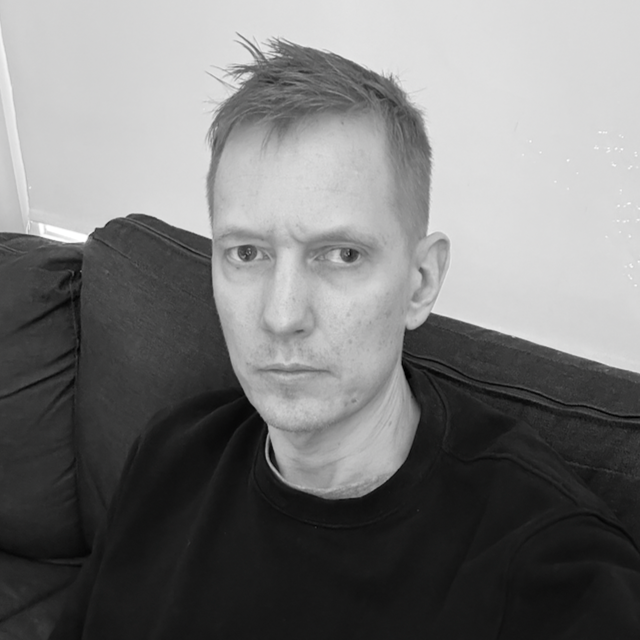

Music
I play bass across pop, rock, and melodic music. I focus on finding the right feel and making sure each bass line supports the song.
Interests
Outside of music, I enjoy technology, design, and mechanical watches.

Bass player based in Kristiansand, Norway
I play bass across pop, rock, and melodic music. I focus on finding the right feel and making sure each bass line supports the song.
Outside of music, I enjoy technology, design, and mechanical watches.